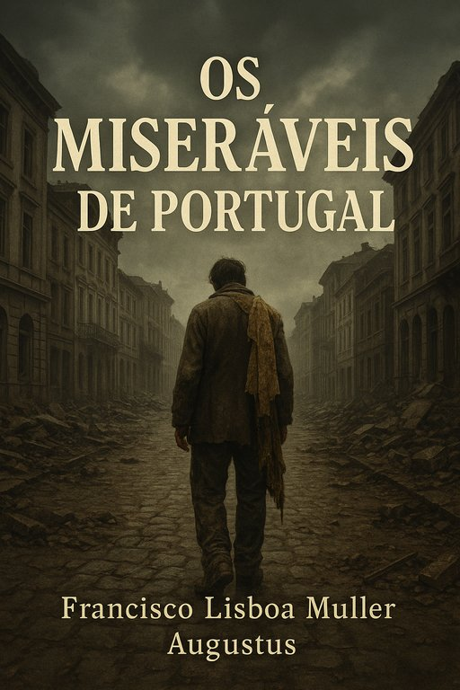

Publicado em 2025-06-06 20:50:32
Uma radiografia sem anestesia da mediocridade institucional portuguesa
Data de publicação: 6 de junho de 2025
Autor: Francisco Gonçalves
Editorial: FragmentosCaos Publicações Independentes
Foi lançado esta semana Os Miseráveis de Portugal, o mais recente livro de Francisco Gonçalves, uma obra que não pede licença à História nem se curva aos poderes instalados. Com cerca de 60 páginas densas, duras e por vezes líricas, este manifesto literário mergulha nos escombros da governação nacional dos últimos 50 anos — com especial ênfase na degradação social, política, económica e ética que asfixia Portugal.
"Portugal tornou-se um país onde o talento emigra e a mediocridade assina despachos", lê-se logo nas primeiras páginas do livro.
Dividido em 16 capítulos temáticos — desde a falência ética da política à degradação da saúde, da justiça ao sistema educativo — o livro denuncia, com rigor e ironia, o ciclo vicioso que mantém o país amarrado à estagnação e à dependência externa.
A obra fecha com uma reflexão estratégica de futuro, propondo um Portugal novo: menos Estado obeso e mais inteligência distribuída; menos submissão institucional e mais cidadania consciente.
A capa do livro, uma composição visual dramática e simbólica, retrata o fado amargo de um povo aprisionado entre ruínas ideológicas e promessas traídas. A contracapa resume o espírito da obra com uma pergunta lapidar:
"Como pode um país com tanta luz ser governado por tanta sombra?"
O livro está disponível em:
Este livro é um convite à reflexão, mas também à ação.
Partilha. Discute. Revoluciona.
"Os Miseráveis de Portugal não são só os pobres – são também os que governam como se a inteligência fosse um risco e o povo um incómodo."
Imagens cortesia de OpenAI (c)